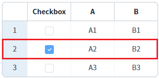

GridView의 바디 컬럼의 'inputType'이 'checkbox'로 설정되었을 때, 체크된 행의 데이터를 반환받는 예제입니다.
데이터의 타입별로 아래의 메소드를 사용할 수 있습니다. - JSON 배열: getCheckedJSON - XML: getCheckedXML - 2차원 배열: getCheckedData //행 단위로 컬럼의 value가 배열로 담깁니다.
체크된 행의 Data 반환받기 - JSON, XML, Array
예제 영역 '체크된 행의 Data 반환받기'에 구성된 GridView에서 테스트합니다.1
STEP 1: 초기 상태를 확인합니다.
GridView의 두 번째 행의 'Checkbox' 컬럼이 체크된 상태입니다.
Image 1.브라우저(Chrome) 실행 예시

2
STEP 2: 버튼 'getCheckedJSON'을 클릭합니다.
3
STEP 3: 반환된 Data를 확인합니다.
체크된 행의 데이터가 JSON으로 구성되어 배열에 담겨 반환됩니다.
영역 '로그 확인'의 textarea 또는 브라우저 개발자 도구의 콘솔에 로그가 출력됩니다.
Example 1.Log
[09:37:29] getCheckedJSON 반환 값 :
[
{
"chk_1": "1",
"col_a": "A2",
"col_b": "B2",
"rowStatus": "R"
}
]예제 영역 '체크된 행의 Data 반환받기'에 구성된 GridView에서 테스트합니다.1
STEP 1: 초기 상태를 확인합니다.
GridView의 두 번째 행의 'Checkbox' 컬럼이 체크된 상태입니다.
Image 2.브라우저(Chrome) 실행 예시
2
STEP 2: 버튼 'getCheckedXML'을 클릭합니다.
3
STEP 3: 반환된 Data를 확인합니다.
체크된 행의 데이터가 XML로 반환됩니다.
영역 '로그 확인'의 textarea 또는 브라우저 개발자 도구의 콘솔에 로그가 출력됩니다.
Example 2.Log
[09:37:38] getCheckedXML 반환 값 :
<list>
<map status="0" statusValue="R" id="1">
<chk_1>1</chk_1>
<col_a>A2</col_a>
<col_b>B2</col_b>
</map>
</list>예제 영역 '체크된 행의 Data 반환받기'에 구성된 GridView에서 테스트합니다.예제 영역 '체크된 행의 Data 반환받기'에 구성된 GridView에서 테스트합니다.1
STEP 1: 초기 상태를 확인합니다.
GridView의 두 번째 행의 'Checkbox' 컬럼이 체크된 상태입니다.
Image 3.브라우저(Chrome) 실행 예시
2
STEP 2: 버튼 'getCheckedData'을 클릭합니다.
3
STEP 3: 반환된 Data를 확인합니다.
체크된 행의 데이터가 배열로 구성되어 배열에 담겨 반환됩니다.(2차원 배열로 반환됩니다.)
영역 '로그 확인'의 textarea 또는 브라우저 개발자 도구의 콘솔에 로그가 출력됩니다.
Example 3.Log
[09:40:32] getCheckedData 반환 값 : [ [ "1", "A2", "B2" ] ]
GridView의 getCheckedJSON 메소드를 사용하여 스크립트를 작성합니다.
Example 4.Script
// 예제 파일에서는 스크립트 scwin.btn_ex1_onclick에 작성되어 있습니다. // GridView grd_exam1의 컬럼 chk_1의 체크된 행의 데이터를 JSON으로 반환 받기 // 인덱스는 컬럼이 추가/삭제되면 변경되기 때문에 컬럼의 아이디를 사용합니다.var objData = grd_exam1.getCheckedJSON("chk_1");
GridView의 getCheckedXML 메소드를 사용하여 스크립트를 작성합니다.
Example 5.Script
// 예제 파일에서는 스크립트 scwin.btn_ex2_onclick에 작성되어 있습니다. // GridView grd_exam1의 컬럼 chk_1의 체크된 행의 데이터를 XML로 반환 받기 // 인덱스는 컬럼이 추가/삭제되면 변경되기 때문에 컬럼의 아이디를 사용합니다. var objData = grd_exam1.getCheckedXML("chk_1");
GridView의 getCheckedData 메소드를 사용하여 스크립트를 작성합니다.
Example 6.Script
// 예제 파일에서는 스크립트 scwin.btn_ex3_onclick에 작성되어 있습니다. // GridView grd_exam1의 컬럼 chk_1의 체크된 행의 데이터를 2차원 배열로 반환 받기 // 인덱스는 컬럼이 추가/삭제되면 변경되기 때문에 컬럼의 아이디를 사용합니다. var objData = grd_exam1.getCheckedData("chk_1");
getCheckedJSON( colIndex )
getCheckedXML( colIndex )
getCheckedData( colIndex )